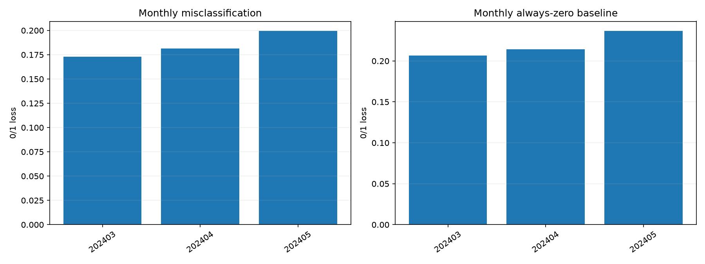
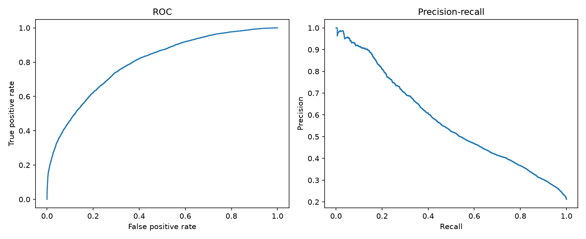
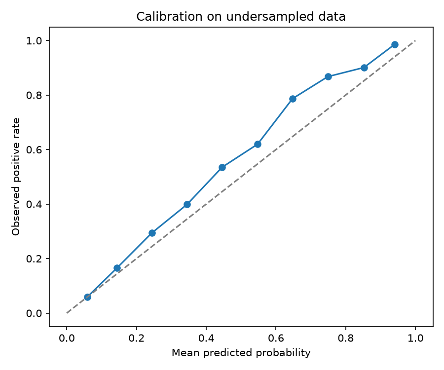
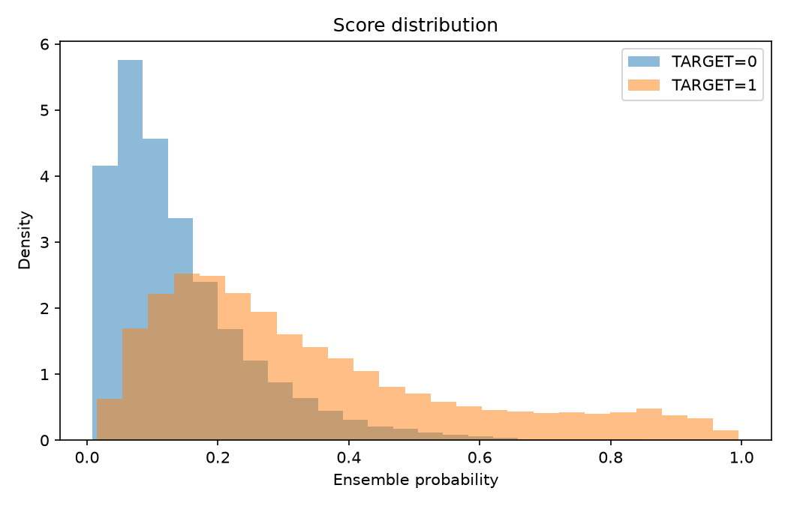
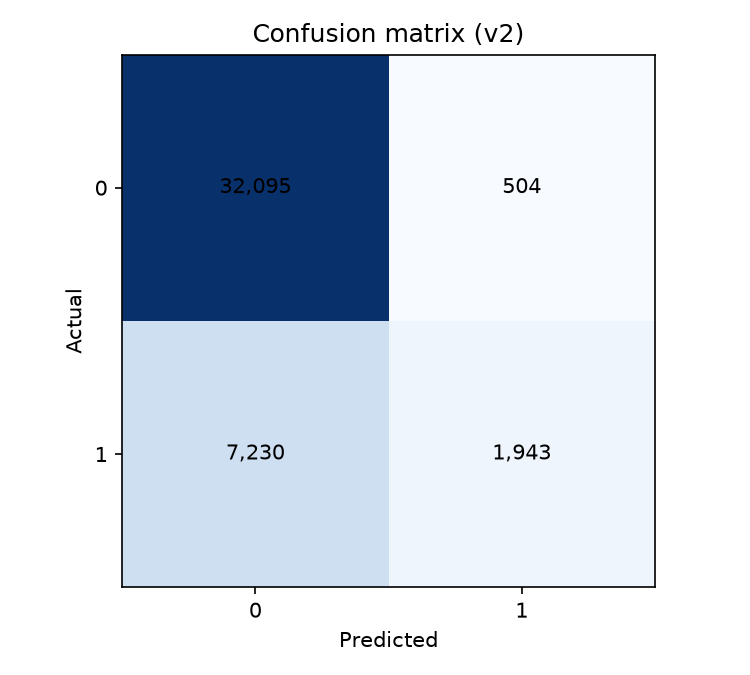

Model: /home/cjw031530/1/higher-analysis/Ensemble/outputs/run_20261006_180626/v2_model
Training protocol: v2
Evaluation protocol: v2. No independent test set is available.
Final validation 0/1 loss / misclassification rate (overall_weighted): 0.178167
The fixed classification rule is probability > 0.5. Outer validation scores were displayed during training but did not choose hyperparameters, rounds, or checkpoints. Probabilities are scores on an undersampled source dataset.
| scope | rows | misclassification_rate | always_zero_error | log_loss | brier_score | roc_auc | average_precision |
|---|---|---|---|---|---|---|---|
| overall_unweighted | 41772 | 0.185148 | 0.219597 | 0.422900 | 0.134284 | 0.794486 | 0.578386 |
| overall_weighted | 41772 | 0.178167 | 0.211733 | 0.411788 | 0.129995 | 0.796784 | 0.572665 |
| common_v1_unweighted | 28679 | 0.190732 | 0.225601 | 0.431981 | 0.137761 | 0.792358 | 0.582281 |
| month | rows | misclassification_rate | always_zero_error | log_loss | brier_score | roc_auc | average_precision |
|---|---|---|---|---|---|---|---|
| 202403 | 13093 | 0.172917 | 0.206446 | 0.403008 | 0.126667 | 0.800073 | 0.571488 |
| 202404 | 13966 | 0.181584 | 0.214020 | 0.418284 | 0.132351 | 0.792627 | 0.569007 |
| 202405 | 14713 | 0.199415 | 0.236593 | 0.444982 | 0.142896 | 0.791892 | 0.594368 |
| model | rows | misclassification_rate | always_zero_error | log_loss | brier_score | roc_auc | average_precision |
|---|---|---|---|---|---|---|---|
| ensemble | 41772 | 0.178167 | 0.211733 | 0.411788 | 0.129995 | 0.796784 | 0.572665 |
| catboost | 41772 | 0.181471 | 0.211733 | 0.421351 | 0.133308 | 0.784124 | 0.552855 |
| lightgbm | 41772 | 0.175259 | 0.211733 | 0.407426 | 0.128407 | 0.801296 | 0.579712 |
| xgboost | 41772 | 0.177401 | 0.211733 | 0.412670 | 0.130260 | 0.794593 | 0.569212 |
| always_zero | 41772 | 0.211733 | 0.211733 | 7.631631 | 0.211733 | 0.500000 | 0.211733 |
| actual | predicted | rows | weighted_mass |
|---|---|---|---|
| 0 | 0 | 32095 | 0.775520 |
| 0 | 1 | 504 | 0.012747 |
| 1 | 0 | 7230 | 0.165420 |
| 1 | 1 | 1943 | 0.046313 |




